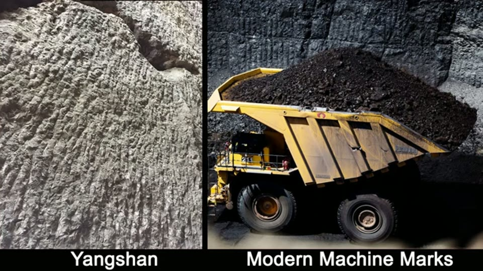

Curious Being
Tool Marks on Ancient Yangshan Monument Match Modern Machine Marks
Tina · 11 min · watch on YouTube · summarised 2026-09-27
The follow-up to the Yangshan monolith video, and her earliest statement of the machine-marks case. In the STEAM method video from November 2025 the same question is put to a test, including on quarries that fail it. This one is the argument before that test existed.
The observation that lasts
She identifies two different families of tool mark on the Yangshan blocks 01:37–05:19.
The first are long, slightly angled, sometimes almost straight grooves, uniform and parallel to each other. She finds them again at Baalbek, on the Temple of Jupiter foundation stones and the unfinished Stone of the Pregnant Woman; at Petra; and on an old wall in Greece.
The second are shorter, curved, organic, almost scratch-like marks, and her point about them is locational: they appear mainly on the ceilings of the openings cut under the long body block and the base, not on the exteriors. She compares them to an unfinished cave ceiling in India — a site otherwise highly polished, so the unfinished ceiling is the only place the working marks survive — and to a cave in northern Italy.
Her inference from that is restrained: different tools, or different methods, were used on ceilings than on outside faces 05:13–05:24. That is an observation about distribution, and it survives whatever anyone concludes about who made the marks.


Long, near-parallel grooves at Yangshan recur at Baalbek and Petra, which she reads as the same tool at sites with no connection.

A second family of marks — short, curved, scratch-like — appears mainly on ceilings rather than on outside faces, which she reads as a different tool or method used overhead.
The argument that does not
The rest is elimination, conducted on two candidates.
Chisels 06:29–07:35. A mason has to stand close and anchor at the elbow, so the range of movement is short; chisels suit small-scale detailed work; the striations at these sites are much longer than a chisel stroke. She adds that evenly spaced strokes are hard regardless — the analogy is scooping ice cream with a spoon at even intervals.
Pickaxes 07:35–09:33. A full swing anchored at the core gives the range, but not the placement. Try drawing ten parallel freehand lines close together, then imagine doing it with a pickaxe. A pickaxe makes an indentation in rock, not a long line.
She then states the method explicitly, quoting Sherlock Holmes on eliminating the impossible 09:54–09:59, and concludes that patterns spaced that precisely, at that scale, are humanly impossible and could only have been made by advanced machines — which the credited 600 to 2,000 year old dates rule out, leaving a lost civilisation.

Modern mining machinery leaves striations like the ones at Yangshan, and that machinery did not exist when the site is dated to.
She marks her own limits while doing it: "I am unfamiliar with mining or quarrying with pickaxes, but I imagine it would be very difficult..." 07:59–08:12.
What you can check yourself
- The two mark families at Yangshan, and where each occurs. Whether the scratch-like marks are confined to ceilings is a photographable claim about a specific site.
- The Indian cave with the unfinished ceiling is a real and unusual piece of evidence: a site polished everywhere else, so the working surface survives in one place only.
- The comparison photographs are paired on screen and a reader can judge the resemblance without taking her word for it.
- Chisel and pickaxe ranges of movement can be tested by anyone with either tool.
- Mohs values for limestone and sandstone are published, which matters here for a reason she did not intend — see below.
What the video does not settle
- The same rock type is given different hardness figures across her videos. Here Yangshan limestone and Petra sandstone are 4–5 on the Mohs scale, "soft rock" 03:25–03:45. In the Chinese caves video from 2022 sandstone is 6–7, "almost the same hardness of granite and steel", and the STEAM method video keeps it near granite. None of the three cites a source.
- Two candidates are eliminated and the conclusion is drawn as though the field were exhausted. Chisels and pickaxes are what the video tests. No other pre-modern method is considered before the Holmes quotation is applied.
- Precision is asserted, never measured. No spacing, width, depth or angle figures are given for any of the marks at any of the six sites.
- The comparison images do the work the argument does not, and two of the three do not carry it. In the Baalbek pair the Yangshan face has fine parallel striations and the Baalbek wall is pocked and bossed, with no parallel banding visible at that scale. In the Petra pair the strongest pattern on the Petra side is the natural colour banding of the sandstone, which is geology rather than tooling. The Indian ceiling pair is the one that does show the same kind of mark on both sides.
- The machine comparison image shows mostly a haul truck. The right-hand panel is mostly a yellow haul truck; the cut face is background, partly out of frame, and the material being moved is dark and reads as coal rather than limestone. No machine, mine, country or date is named, and "we didn't have them 50 years ago" 05:31–05:38 is said of machines that are never identified.
- She had not yet built the test she would later apply to this exact question. By 2025 she was ruling sites out on five factors and conceding quarries that failed them. This video rules nothing out.